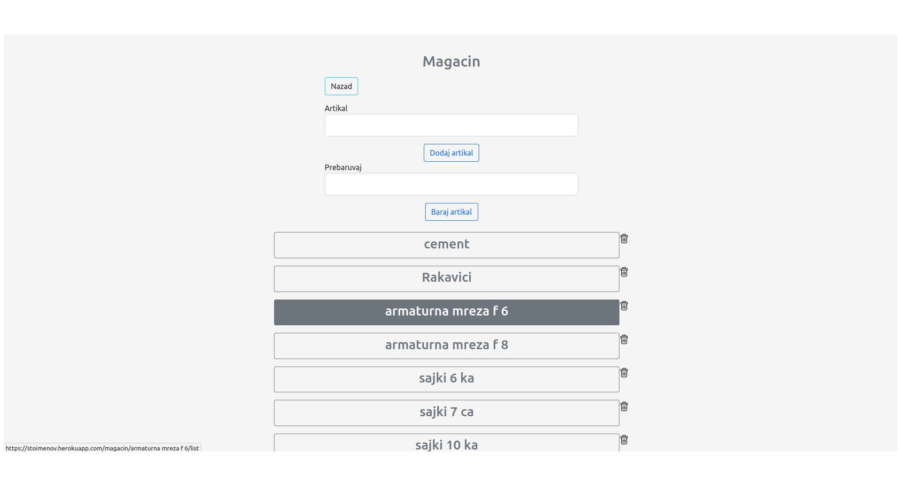
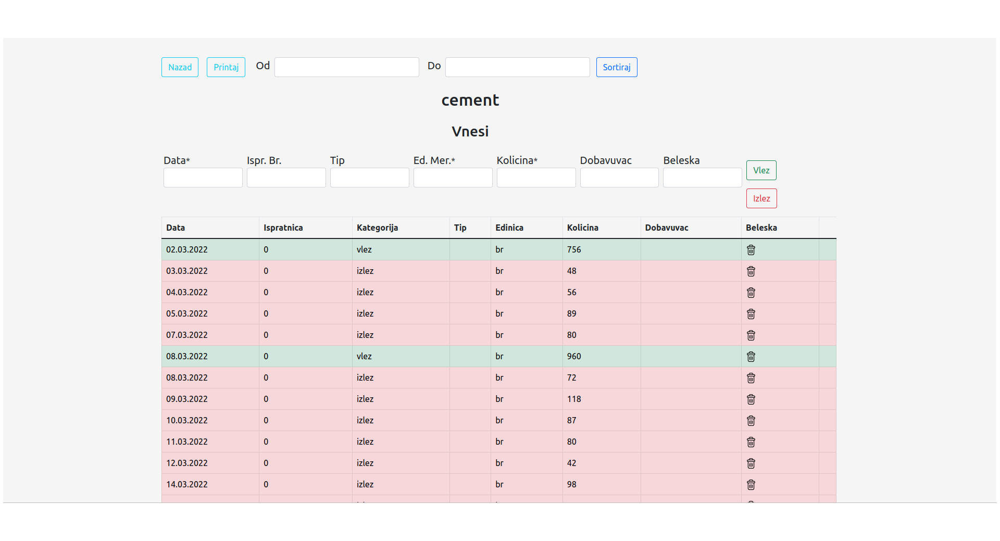

Warehouse Management for a construction company


What is it
Features
It's a management software, it helps a construction company keep track of their warehouse. What makes it special is that it is online, so they can view it from anywhere at anytime.
Keeps track: of what is going in and going out of the warehouse and calculates what's left.
Easy to use: it was made together with people who use to do this in notebooks, so it has everything you need and more.
Online, Fast, Safe: you can see your warehouse while you are at a diner or on vacation.